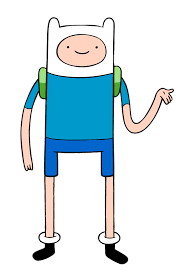
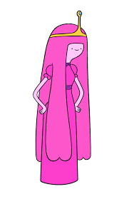
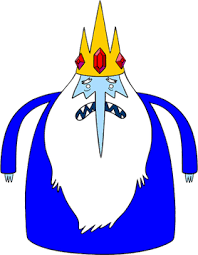
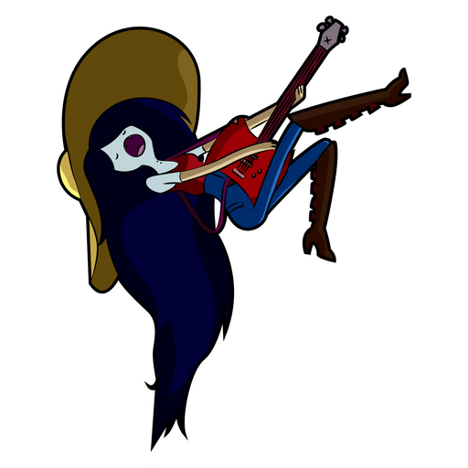
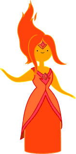
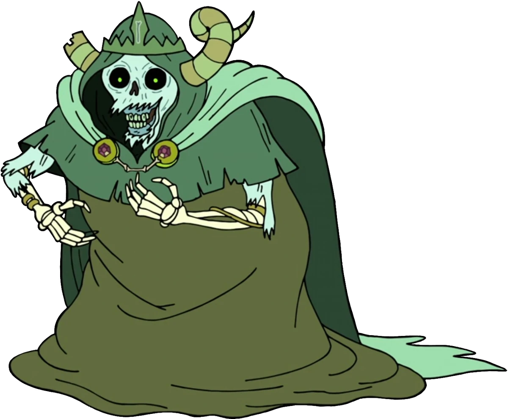

Finn the Human
Finn Mertens (also known as Finn the Human) is the main protagonist in Adventure Time. Finn has received universal praise for his character development and coming-of-age narrative, which saw the character mature from a boy into a wise young man.

Princess Bubblegum
Princess Bonnibel "Bonnie" Bubblegum (often called PB and occasionally Peebles, Bub-Bubs, or P-Bubs) is one of the main characters of the series Adventure Time and first appeared in the animated short.
Princess Bubblegum is the current incarnation of the Candy Elemental. Which is comparable to the inhabitants of the Candy Kingdom, who are all composed of types of desserts and candies. She rules over the Candy Kingdom

Ice King
Simon Petrikov, formerly known as the Ice King, is a major character in Adventure Time and a protagonist of its spin-off series Adventure Time: Fionna & Cake.
Originally depicted as a two-dimensional, humorously over-the-top villain trying to kidnap Princess Bubblegum and various other princesses on a regular basis, the character's personality was subsequently expanded, revealing him to be a kind-hearted but misunderstood old man with completely twisted senses of morality and social behavior, suffering from loneliness and memory loss.
Jake the Dog
Jake is the deuteragonist of Adventure Time. He is a dog/shape-shifter hybrid, referred to by others as a "magical dog," and Finn's constant companion, best friend, and adoptive brother.

Marcline the Vampire Queen
Marceline is a fun-loving and playful 1,000-year-old vampire queen. Unlike a traditional vampire, Marceline does not need to drink blood to survive; rather, she consumes the color red, or other similar tints. Marceline is also an avid musician who plays an electric bass guitar, which she crafted from her family's heirloom battle-axe.
>

Flame Princess
Flame Princess, whose true name is Phoebe and is occasionally called FP, is the current ruler of the Fire Kingdom as well as Finn's ex-girlfriend. When Jake asks Flambo if he knows any princesses that are Finn's age so he can fix his broken heart, he introduces Jake to Flame Princess. Flame Princess was locked away in a lantern in the main chamber of the Fire Kingdom when Jake first encounters her.

The Lich
The Lich is the main antagonist of Adventure Time. He is an ancient cosmic being who is the manifestation of the inevitable death of all things. His essence was deposited on Earth millions of years before the start of the show via a catalyst comet, but came into physical being near the end of the Mushroom War from a "mutagenic bomb" after he possessed a person who had been submerged in mutagenic waste.